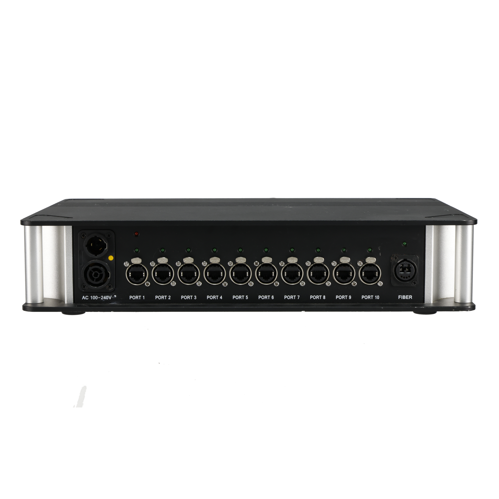

同じ型式？
H10FNとH10FN2は別型式です。手配書と本体の型番を最後まで照合します。
映像をつなぐ・整える ↗EQUIPMENT / 83
LEDデータの光変換器
離れたLEDへ、光の経路からデータを分ける。
KEY SPECIFICATIONS
 画像を大きく見る ＋
画像を大きく見る ＋01 / ROLE & FLOW

画像を拡大 ↗型番、端子の役割、必要なケーブルを、送り元と受け側の両方で合わせます。
02 / BEFORE YOUR BRIEF
H10FNとH10FN2は別型式です。手配書と本体の型番を最後まで照合します。
専用シングルモード光ケーブルの仕様と両端を確認します。端子が挿さるだけで対応と判断しません。
各ポートからどの画面・パネル列へ送るかを記録し、本番前に表示と切替を確認します。
03 / CHOOSING THE RIGHT TOOL
映像操作席からLEDまで距離がある現場で、対応する送出機器からの光伝送を銅線のLED配線へ分ける構成に。距離だけでなく、光端子とLED側の配線計画を合わせて検討します。
HDMIやSDIの映像を直接入力する一般的な映像変換器ではありません。光変換器の型式・ケーブル・送出機器・受信設定をそろえます。H10FNを使った構成例を、H10FN2にも適用できるとは限りません。
光ケーブルの損傷や端面の汚れは伝送に影響します。配線・端面の点検は担当技術者が指定の方法で行い、通光中の光端子を直接のぞきません。配線経路を保護し、機器の放熱と電源容量を確保します。
日程・台数、送出機器とLED型式、光ケーブルの種類・端子・長さ、銅線側の行き先、予備経路、電源・設置場所、配線・表示試験の担当範囲をお聞かせください。本体・周辺機材・搬入出・設営・本番操作・撤去を分けて、必要な範囲を整理します。
04 / RELATED EQUIPMENT
関連する役割の機器です。Z5との接続可否は実際に使う構成で個別確認します。